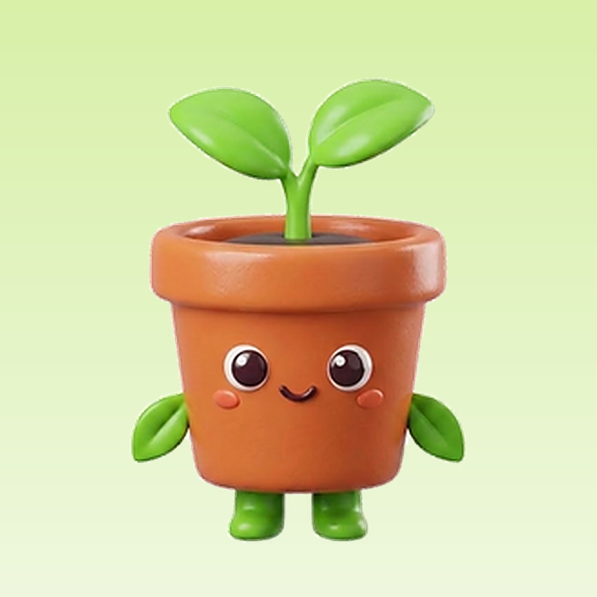

<!doctype html>
<meta charset="utf-8">
<title>Cropsy store frames</title>
<style>
  @font-face { font-family: PJS; src: url(fonts/pjs-700.ttf) format('truetype'); font-weight: 700 }
  @font-face { font-family: PJS; src: url(fonts/pjs-800.ttf) format('truetype'); font-weight: 800 }

  :root {
    --accent: #2A7F2A;
    --accent-deep: #1F6420;
    --accent-bright: #4CC23F;
    --forest: #15391D;
    --amber: #E8B33A;
    --clay: #B4532F;
  }

  * { margin: 0; padding: 0; box-sizing: border-box }
  html, body { width: 1320px; height: 2868px; overflow: hidden }
  body { font-family: PJS, sans-serif; -webkit-font-smoothing: antialiased }

  .shot {
    position: relative; width: 1320px; height: 2868px; overflow: hidden;
    background: linear-gradient(168deg, #35953A 0%, #24762A 46%, #1A5B21 100%);
  }
  /* soft leaf watermark, same trick PictureThis uses to keep the panel alive */
  .shot::before {
    content: ''; position: absolute; inset: -10% -20% auto -20%; height: 120%;
    background:
      radial-gradient(38% 30% at 12% 8%, rgba(255,255,255,.10), transparent 70%),
      radial-gradient(44% 34% at 92% 26%, rgba(255,255,255,.07), transparent 70%),
      radial-gradient(60% 40% at 50% 104%, rgba(0,0,0,.18), transparent 70%);
  }

  .brand {
    position: absolute; top: 96px; left: 0; right: 0; z-index: 3;
    display: flex; align-items: center; justify-content: center; gap: 18px;
  }
  .brand img { width: 84px; height: 84px }
  .brand span { font-weight: 800; font-size: 54px; color: #fff; letter-spacing: -.02em }

  h1 {
    position: absolute; left: 90px; right: 90px; z-index: 3;
    top: 168px; text-align: center; color: #fff;
    font-weight: 800; font-size: 104px; line-height: 1.06; letter-spacing: -.03em;
    text-shadow: 0 6px 30px rgba(0,0,0,.22);
  }
  .shot.with-brand h1 { top: 252px }
  h1.small { font-size: 88px }

  .device {
    position: absolute; z-index: 2; left: 50%; transform: translateX(-50%);
    top: 560px; width: 1116px; height: 2400px;
    border-radius: 66px; overflow: hidden; background: #F2F6EC;
    box-shadow: 0 40px 90px rgba(0,0,0,.34), 0 0 0 10px rgba(255,255,255,.14);
  }
  .shot.with-brand .device { top: 660px }
  .device img { width: 1116px; display: block; position: absolute; left: 0 }

  /* callouts — the pill/badge layer that makes a flat screen read as a claim */
  .pill {
    position: absolute; z-index: 4; font-weight: 800; font-size: 44px; color: #fff;
    padding: 24px 40px; border-radius: 999px; white-space: nowrap;
    box-shadow: 0 18px 40px rgba(0,0,0,.3);
  }
  .pill.amber { background: var(--amber); color: #3A2A05 }
  .pill.clay { background: var(--clay) }
  .pill.dark { background: rgba(10,34,14,.92) }
  .pill::after {
    content: ''; position: absolute; bottom: -20px; left: 56px;
    border: 14px solid transparent; border-top-color: inherit;
  }
  .pill.amber::after { border-top-color: var(--amber) }
  .pill.clay::after { border-top-color: var(--clay) }
  .pill.dark::after { border-top-color: rgba(10,34,14,.92) }
  .pill.no-tail::after { display: none }


  /* break-out layer: a cut-out subject that leaves the device frame, plus the
     chips that float beside it (the trick every top plant app uses on shot 1) */
  .breakout {
    position: absolute; z-index: 5; pointer-events: none;
    filter: drop-shadow(0 40px 60px rgba(0,0,0,.42));
  }
  .chip {
    position: absolute; z-index: 6; display: flex; align-items: center; gap: 22px;
    background: #fff; border-radius: 999px; padding: 26px 34px;
    box-shadow: 0 24px 50px rgba(0,0,0,.34);
    font-weight: 800; font-size: 46px; color: #15391D; white-space: nowrap;
  }
  .chip b { background: var(--accent-bright); color: #fff; border-radius: 999px;
            padding: 10px 24px; font-size: 40px }
  .chip.soft { background: rgba(255,255,255,.94); font-size: 42px }

  .check {
    position: absolute; z-index: 4; width: 190px; height: 190px; border-radius: 50%;
    background: var(--accent-bright); box-shadow: 0 20px 50px rgba(0,0,0,.3);
    display: flex; align-items: center; justify-content: center;
  }
  .check svg { width: 104px; height: 104px }
</style>
<body></body>
<script>
// Each entry: one store screenshot. `y` scrolls the capture inside the device
// window so the frame shows the part of the screen the headline is claiming.
const SHOTS = [
  // ---------- English ----------
  { id: 'en-1-diagnose', img: '../shots/en-scan.png', brand: true,
    h: 'Spot The Problem<br>From One Photo',
    y: -300,
    breakout: { src: 'art/leaf_cutout.png', top: 542, left: 250, w: 1180, rot: 0 },
    chips: [
      { text: 'Late blight <b>87%</b>', top: 1600, left: 30 },
      { text: 'From your photo', top: 1770, left: 90, soft: true },
    ] },

  { id: 'en-2-season', img: '../shots/en-season.png',
    h: 'Your Whole Season,<br>One Path',
    y: -150,
    breakout: { src: 'art/mascot_seedling.png', top: 430, left: 720, w: 560, rot: 6 },
    callouts: [{ cls: 'pill dark no-tail', text: 'Sow · Plant out · Harvest', top: 2210, left: 150 }] },

  { id: 'en-3-home', img: '../shots/en-home.png',
    h: 'Today’s Tasks,<br>Weather Included',
    y: -110,
    breakout: { src: 'art/cloud.png', top: 400, left: 60, w: 620, rot: -8 },
    callouts: [{ cls: 'pill amber', text: '15 mm rain — skip watering', top: 1352, left: 520 }] },

  { id: 'en-4-explore', img: '../shots/en-explore.png',
    h: 'Know What<br>To Grow Next', y: -180,
    breakout: { src: 'art/radishes.png', top: 350, left: 700, w: 700, rot: 8 },
    chips: [{ text: 'Picked for your balcony', top: 1520, left: 50, soft: true }] },

  { id: 'en-5-garden', img: '../shots/en-garden.png',
    h: 'Every Plant,<br>Every Pot, Tracked', small: true, y: -120,
    breakout: { src: 'art/basket.png', top: 380, left: 560, w: 860, rot: -5 },
    chips: [{ text: '5 crops <b>on track</b>', top: 1560, left: 40 }] },

  { id: 'en-6-timeline', img: '../shots/en-timeline.png',
    h: 'From Seed<br>To Harvest', y: -130,
    breakout: { src: 'art/tomatoes.png', top: 420, left: 560, w: 780, rot: 6 },
    chips: [{ text: 'Harvest in <b>57 days</b>', top: 1560, left: 40 }] },

  // ---------- Nederlands ----------
  { id: 'nl-1-diagnose', img: '../shots/nl-scan.png', brand: true,
    h: 'Zie wat er mis is<br>op één foto', y: -300,
    breakout: { src: 'art/leaf_cutout.png', top: 542, left: 250, w: 1180, rot: 0 },
    chips: [
      { text: 'Aardappelziekte <b>87%</b>', top: 1600, left: 30 },
      { text: 'Van jouw foto', top: 1770, left: 90, soft: true },
    ] },

  { id: 'nl-2-season', img: '../shots/nl-season.png',
    h: 'Je hele seizoen,<br>één pad', y: -150,
    breakout: { src: 'art/mascot_seedling.png', top: 430, left: 720, w: 560, rot: 6 },
    callouts: [{ cls: 'pill dark no-tail', text: 'Zaaien · Uitplanten · Oogsten', top: 2210, left: 110 }] },

  { id: 'nl-3-home', img: '../shots/nl-home.png',
    h: 'Taken van vandaag,<br>weer meegerekend', small: true, y: -110,
    breakout: { src: 'art/cloud.png', top: 400, left: 60, w: 620, rot: -8 },
    callouts: [{ cls: 'pill amber', text: '15 mm regen — niet gieten', top: 1352, left: 530 }] },

  { id: 'nl-4-explore', img: '../shots/nl-explore.png',
    h: 'Weet wat je<br>hierna zaait', y: -180,
    breakout: { src: 'art/radishes.png', top: 350, left: 700, w: 700, rot: 8 },
    chips: [{ text: 'Gekozen voor jouw balkon', top: 1520, left: 50, soft: true }] },

  { id: 'nl-5-garden', img: '../shots/nl-garden.png',
    h: 'Elke plant,<br>elke pot bijgehouden', small: true, y: -120,
    breakout: { src: 'art/basket.png', top: 380, left: 560, w: 860, rot: -5 },
    chips: [{ text: '5 gewassen <b>op koers</b>', top: 1560, left: 40 }] },

  { id: 'nl-6-timeline', img: '../shots/nl-timeline.png',
    h: 'Van zaadje<br>tot oogst', y: -130,
    breakout: { src: 'art/tomatoes.png', top: 420, left: 560, w: 780, rot: 6 },
    chips: [{ text: 'Oogst over <b>57 dagen</b>', top: 1560, left: 40 }] },
];

const i = Number(new URLSearchParams(location.search).get('i') || 0);
const s = SHOTS[i];
document.title = s.id;

const el = document.createElement('div');
el.className = 'shot' + (s.brand ? ' with-brand' : '');
el.innerHTML = `
  ${s.brand ? `<div class="brand"><span>Cropsy</span></div>` : ''}
  <h1 class="${s.small ? 'small' : ''}">${s.h}</h1>
  <div class="device"></div>
  ${(s.callouts || []).map(c =>
    `<div class="${c.cls}" style="top:${c.top}px;left:${c.left}px">${c.text}</div>`).join('')}
  ${s.breakout ? `` : ''}
  ${(s.chips || []).map(c =>
    `<div class="chip ${c.soft ? 'soft' : ''}" style="top:${c.top}px;left:${c.left}px">${c.text}</div>`).join('')}
  ${s.check ? `<div class="check" style="top:${s.check.top}px;left:${s.check.left}px">
      <svg viewBox="0 0 24 24" fill="none" stroke="#fff" stroke-width="3.4"
           stroke-linecap="round" stroke-linejoin="round"><path d="M4 12.5l5.2 5.2L20 7"/></svg>
    </div>` : ''}
`;
document.body.append(el);
</script>
